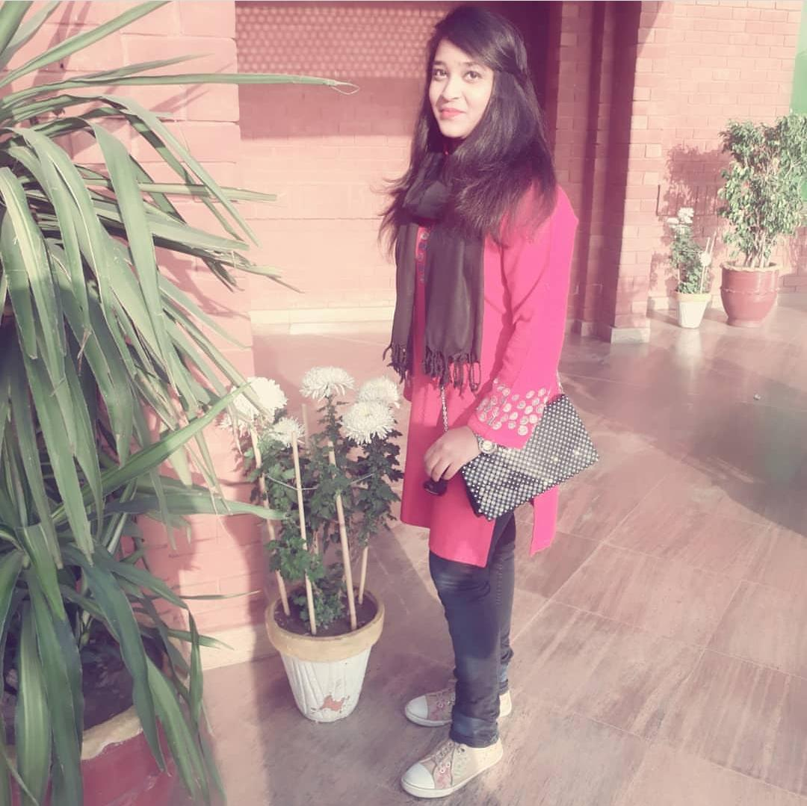

|  | Aimen Rubab |
| Education: |
|
| Email: | aimen.rubab@ucp.edu.pk |
| Contact No: | 03334543072 |
| Address: | House No 44 E/1 Model Town LHR. |
| Qualification: | BS Computer Science 2016University of Central Punjab. Current Semester: 5th CGPA:3.35 FSC Pre Engineering 2014-2016Punjab Group of Colleges. (Physics,Maths,Chemistry) Matric 2012-2014Govt Model Girls High School Model Town LHR. (Physics,Maths,Computer,Chemistry) |
| Experience: | VIS(Volunteer-in-Service) 06-08-2018 to 21-08-2018Inmol Cancer Hospital Near Sheikh Zaid Hospital. |
| Hobbies: |
|